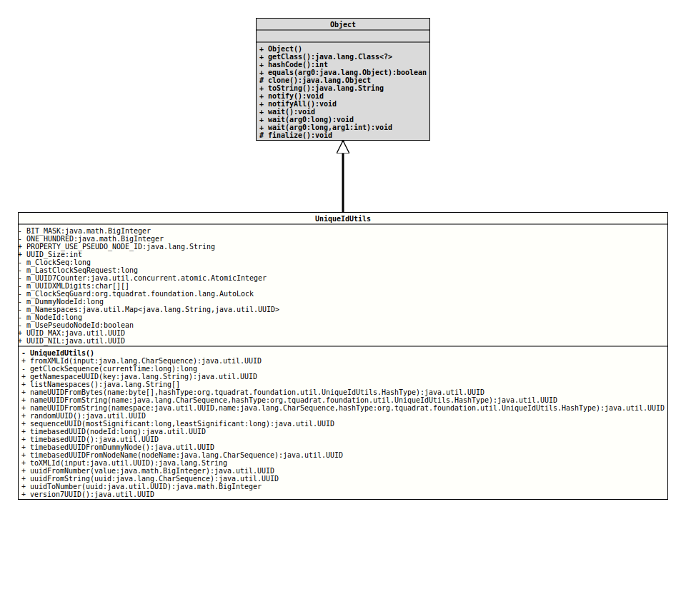

This static class provides some utility methods that are helpful when working with unique ids.
All methods in this class are final, no instance of this class is allowed.
First it extends the capabilities of the class
UUID
that is a part of the Java Runtime library; it implements Universal Unique
ids as defined through RFC 4122. It extends the
capabilities of the Java Runtime class
UUID.
RFC 4122 UUID
The methods
nameUUIDFromBytes(byte[],HashType),
nameUUIDFromString(CharSequence,HashType),
nameUUIDFromString(UUID, CharSequence,HashType),
randomUUID(),
sequenceUUID(long,long),
timebasedUUID(),
timebasedUUID(long),
timebasedUUIDFromNodeName(CharSequence),
and
uuidFromString(CharSequence)
do all create a
UUID
instance, but randomUUID() will delegate to the method with the
same name of the class UUID itself, while
uuidFromString(CharSequence) delegates to
UUID.fromString(String).
nameUUIDFromBytes(byte[],HashType) delegates to
UUID.nameUUIDFromBytes(byte[])
for hashType equal to
UniqueIdUtils.HashType.HASH_MD5.
Currently, this class supports only the generation of UUIDs with the
types 1 (not supported by
UUID),
3, 4, and 5, although the method
uuidFromString(CharSequence)
is also capable of converting UUID Strings representing the type 2
into valid UUID instances.
The type 0 as generated by
sequenceUUID(long,long)
is not defined by RFC 4122.
The sample Implementation for a UUID Generator
The source code for this sample implementation in C was taken from RFC 4122.
The appendix C of RFC 4122 also lists the name space IDs for some potentially interesting name spaces, as initialized C structures and in the string representation defined by the RFC.
/* Name string is a fully-qualified domain name */
uuid_t NameSpace_DNS = { /* 6ba7b810-9dad-11d1-80b4-00c04fd430c8 */
0x6ba7b810,
0x9dad,
0x11d1,
0x80, 0xb4, 0x00, 0xc0, 0x4f, 0xd4, 0x30, 0xc8
};
/* Name string is a URL */
uuid_t NameSpace_URL = { /* 6ba7b811-9dad-11d1-80b4-00c04fd430c8 */
0x6ba7b811,
0x9dad,
0x11d1,
0x80, 0xb4, 0x00, 0xc0, 0x4f, 0xd4, 0x30, 0xc8
};
/* Name string is an ISO OID */
uuid_t NameSpace_OID = { /* 6ba7b812-9dad-11d1-80b4-00c04fd430c8 */
0x6ba7b812,
0x9dad,
0x11d1,
0x80, 0xb4, 0x00, 0xc0, 0x4f, 0xd4, 0x30, 0xc8
};
/* Name string is an X.500 DN (in DER or a text output format) */
uuid_t NameSpace_X500 = { /* 6ba7b814-9dad-11d1-80b4-00c04fd430c8 */
0x6ba7b814,
0x9dad,
0x11d1,
0x80, 0xb4, 0x00, 0xc0, 0x4f, 0xd4, 0x30, 0xc8
};- Author:
- Thomas Thrien (thomas.thrien@tquadrat.org)
- Version:
- $Id: UniqueIdUtils.java 1111 2024-03-04 21:54:29Z tquadrat $
- Since:
- 0.0.5
- See Also:
- UML Diagram
-

UML Diagram for "org.tquadrat.foundation.util.UniqueIdUtils"
{kind=link}
-
Nested Class Summary
Nested ClassesModifier and TypeClassDescriptionstatic enumTwo different hash types are used for name-based UUIDs. -
Field Summary
FieldsModifier and TypeFieldDescriptionprivate static final BigIntegerThe bit mask used for the conversion from and to a number.private static longThe clock sequence.private static final AutoLockThe guard for the clock sequence.private static final longThe dummy node id that is used to generate UUIDs, if required.private static longThe last time when a clock sequence was requested.The UUIDs for the predefined name spaces, according to RFC 4122.private static final longThe node id that is used to generate UUIDs.private static final booleanThis flag controls ifm_NodeIdis forced to be a random value.
It will be controlled by the system property ""org.tquadrat.foundation.util.UniqueIdUtils.UsePseudoNodeId"".
Using a pseudo node id would generate anonymous UUIDs.private static final AtomicIntegerThe counter for version 7 UUIDs.private static final char[][]The digits that are used for an XML safe UUID.private static final BigIntegerDivisor for the calculation of the timestamp.static final StringThe name for the internal system property for the flag controlling that only pseudo node ids should be used to generateUUIDinstances of type 1: "org.tquadrat.foundation.util.UniqueIdUtils.UsePseudoNodeId".static final UUIDThe max UUID.static final UUIDThe nil UUID.static final intThe character count for aUUID: 36. -
Constructor Summary
Constructors -
Method Summary
Modifier and TypeMethodDescriptionstatic final UUIDfromXMLId(CharSequence input) Converts an XML safe id that was created throughtoXMLId(UUID)back to a UUID.private static final longgetClockSequence(long currentTime) Returns the clock sequence.static final UUIDgetNamespaceUUID(String key) Returns the UUID for the namespace with the given name.static final String[]Returns the names of the known UUID namespaces.static final UUIDnameUUIDFromBytes(byte[] name, UniqueIdUtils.HashType hashType) Static factory to retrieve a type 3 (name based, MD5 hashed) or a type 5 (name based, SHA hashed) UUID based on the specified byte array.
This method will always return the same output if the input is the same.
The provided name should be prepended with the UUID for a designated name space, although this is neither enforced nor checked by this method.static final UUIDnameUUIDFromString(CharSequence name, UniqueIdUtils.HashType hashType) Creates a name-based (version type 3 or type 5, depending on the provided hash type) UUID from the given String.
This method will always return the same output if the input is the same.
The provided name should be prepended with the UUID for a designated name space, although this is neither enforced nor checked by this method.static final UUIDnameUUIDFromString(UUID namespace, CharSequence name, UniqueIdUtils.HashType hashType) Creates a name-based (version type 3 or type 5, depending on the provided hash type) UUID from the given String, using the provided namespace UUID as the prefix.
This method will always return the same output if the input is the same.static final UUIDStatic factory to retrieve a type 4 (pseudo randomly generated) UUID.static final UUIDsequenceUUID(long mostSignificant, long leastSignificant) Creates a sequence UUID from the given values; this UUID will have the type 0 (that is not officially defined).static final UUIDCreates a time-based (version type 1) UUID using the internal node id.static final UUIDtimebasedUUID(long nodeId) Creates a time-based (version type 1) UUID, using the given node id.static final UUIDCreates a time-based (version type 1) UUID from a dummy node id.static final UUIDtimebasedUUIDFromNodeName(CharSequence nodeName) Creates a time-based (version type 1) UUID from the given node name.
The provided node name will be hashed (using MD5), the bytes from the result will be converted intoBigInteger.static final StringConverts a UUID to a String that can be used as an XML id.static final UUIDuuidFromNumber(BigInteger value) Creates aUUIDfrom the given number (more precise, the givenBigInteger).static final UUIDuuidFromString(CharSequence uuid) Creates a UUID from the string standard representation.static final BigIntegeruuidToNumber(UUID uuid) Returns a number (more precise, an instance ofBigInteger) that represents the given UUID.static final UUIDCreates a time-based (version type 7) UUID.
-
Field Details
-
BIT_MASK
The bit mask used for the conversion from and to a number. -
ONE_HUNDRED
Divisor for the calculation of the timestamp. -
PROPERTY_USE_PSEUDO_NODE_ID
The name for the internal system property for the flag controlling that only pseudo node ids should be used to generate
UUIDinstances of type 1: "org.tquadrat.foundation.util.UniqueIdUtils.UsePseudoNodeId".A value of
truemeans that only pseudo ids will be used throughout the current run of the program, whilefalse(the default) means that a MAC address is used for the calculation of a node id, if available.This system property is not necessarily configured.
- See Also:
-
UUID_Size
The character count for aUUID: 36.- See Also:
-
m_ClockSeq
The clock sequence. -
m_LastClockSeqRequest
The last time when a clock sequence was requested. -
m_UUID7Counter
The counter for version 7 UUIDs. -
m_UUIDXMLDigits
The digits that are used for an XML safe UUID. The first array holds the original digits, the second array those for the XML id.
-
m_ClockSeqGuard
The guard for the clock sequence. -
m_DummyNodeId
The dummy node id that is used to generate UUIDs, if required. This is always a random value. -
m_Namespaces
The UUIDs for the predefined name spaces, according to RFC 4122. -
m_NodeId
The node id that is used to generate UUIDs. This is either the MAC address of one of the NICs in the current system, or a random value. -
m_UsePseudoNodeId
This flag controls ifm_NodeIdis forced to be a random value.
It will be controlled by the system property ""org.tquadrat.foundation.util.UniqueIdUtils.UsePseudoNodeId"".
Using a pseudo node id would generate anonymous UUIDs. -
UUID_MAX
The max UUID. -
UUID_NIL
The nil UUID.
-
-
Constructor Details
-
UniqueIdUtils
private UniqueIdUtils()No instance of this class is allowed!
-
-
Method Details
-
fromXMLId
Converts an XML safe id that was created throughtoXMLId(UUID)back to a UUID.- Parameters:
input- The XML safe id.- Returns:
- The UUID.
- Throws:
IllegalArgumentException- The given XML safe id cannot be converted to a UUID.
-
getClockSequence
Returns the clock sequence. It will be initialised with a random number on each time the program starts, and it remains unchanged until the system detects a clock shift; in that case, it will be increased by one.
An overflow for the clock sequence is possible, but does not harm.
- Parameters:
currentTime- The current time.- Returns:
- The clock sequence.
-
getNamespaceUUID
Returns the UUID for the namespace with the given name.- Parameters:
key- The name of the namespace.- Returns:
- The UUID for the namespace, or
nullif that namespace does not exist.
-
listNamespaces
Returns the names of the known UUID namespaces.- Returns:
- The names of the namespaces.
-
nameUUIDFromBytes
@API(status=STABLE, since="0.0.5") public static final UUID nameUUIDFromBytes(byte[] name, UniqueIdUtils.HashType hashType) Static factory to retrieve a type 3 (name based, MD5 hashed) or a type 5 (name based, SHA hashed) UUID based on the specified byte array.
This method will always return the same output if the input is the same.
The provided name should be prepended with the UUID for a designated name space, although this is neither enforced nor checked by this method.- Parameters:
name- A byte array to be used to construct a UUID.hashType- The hash type to use.- Returns:
- The UUID generated from the specified array.
- See Also:
-
nameUUIDFromString
@API(status=STABLE, since="0.0.5") public static final UUID nameUUIDFromString(CharSequence name, UniqueIdUtils.HashType hashType) Creates a name-based (version type 3 or type 5, depending on the provided hash type) UUID from the given String.
This method will always return the same output if the input is the same.
The provided name should be prepended with the UUID for a designated name space, although this is neither enforced nor checked by this method.- Parameters:
name- The name base for the UUID.hashType- The hash type to use.- Returns:
- The UUID.
- See Also:
-
nameUUIDFromString
@API(status=STABLE, since="0.0.5") public static final UUID nameUUIDFromString(UUID namespace, CharSequence name, UniqueIdUtils.HashType hashType) Creates a name-based (version type 3 or type 5, depending on the provided hash type) UUID from the given String, using the provided namespace UUID as the prefix.
This method will always return the same output if the input is the same.- Parameters:
namespace- The UUID for the namespace.name- The name base for the UUID.hashType- The hash type to use.- Returns:
- The UUID.
- See Also:
-
randomUUID
Static factory to retrieve a type 4 (pseudo randomly generated) UUID. The UUID is generated using a cryptographically strong pseudo random number generator.
This is a wrapper for the method with the same name fromUUID.- Returns:
- A randomly generated UUID.
- See Also:
-
sequenceUUID
@API(status=STABLE, since="0.0.5") public static final UUID sequenceUUID(long mostSignificant, long leastSignificant) Creates a sequence UUID from the given values; this UUID will have the type 0 (that is not officially defined).
UUIDs of this type are used to define globally identical keys, meaning that this method will always return the same output if the input is the same.
- Parameters:
mostSignificant- The most significant bits for the new UUID.leastSignificant- The least significant bits for the new UUID.- Returns:
- The new UUID of type 0.
-
timebasedUUID
Creates a time-based (version type 1) UUID, using the given node id.- Parameters:
nodeId- The node id; only the lower 48 bit from this value are used for the UUID.- Returns:
- The UUID.
-
timebasedUUID
Creates a time-based (version type 1) UUID using the internal node id.- Returns:
- The UUID.
- See Also:
-
timebasedUUIDFromDummyNode
Creates a time-based (version type 1) UUID from a dummy node id.- Returns:
- The UUID.
-
timebasedUUIDFromNodeName
@API(status=STABLE, since="0.0.5") public static final UUID timebasedUUIDFromNodeName(CharSequence nodeName) Creates a time-based (version type 1) UUID from the given node name.
The provided node name will be hashed (using MD5), the bytes from the result will be converted intoBigInteger. ThentimebasedUUID(long)is called with the result fromBigInteger.longValue(), called on the value mentioned before.- Parameters:
nodeName- The node name.- Returns:
- The UUID.
-
toXMLId
Converts a UUID to a String that can be used as an XML id.- Parameters:
input- The UUID.- Returns:
- The XML safe id.
-
uuidFromNumber
Creates a
UUIDfrom the given number (more precise, the givenBigInteger).- Parameters:
value- The number.- Returns:
- The UUID.
-
uuidFromString
@API(status=STABLE, since="0.0.5") public static final UUID uuidFromString(CharSequence uuid) throws IllegalArgumentException, EmptyArgumentException, NullArgumentException Creates a UUID from the string standard representation.
The UUID string representation is as described by this BNF:
UUID = <time_low> "-" <time_mid> "-" <time_high_and_version> "-" <variant_and_sequence> "-" <node> time_low = 4 × <hexOctet> time_mid = 2 × <hexOctet> time_high_and_version = 2 × <hexOctet> variant_and_sequence = 2 × <hexOctet> node = 6 × <hexOctet> hexOctet = <hexDigit><hexDigit> hexDigit = "0" | "1" | "2" | "3" | "4" | "5" | "6" | "7" | "8" | "9" | "a" | "b" | "c" | "d" | "e" | "f" | "A" | "B" | "C" | "D" | "E" | "F"- Parameters:
uuid- The UUID string representation.- Returns:
- The UUID from the given String representation.
- Throws:
NullArgumentException- The argument isnull.EmptyArgumentException- The argument is the empty String.IllegalArgumentException- The argument is invalid.- See Also:
-
uuidToNumber
Returns a number (more precise, an instance ofBigInteger) that represents the given UUID.- Parameters:
uuid- The UUID to convert.- Returns:
- The number that represents the UUID.
- Since:
- 0.1.0
-
version7UUID
Creates a time-based (version type 7) UUID.- Returns:
- The UUID.
-